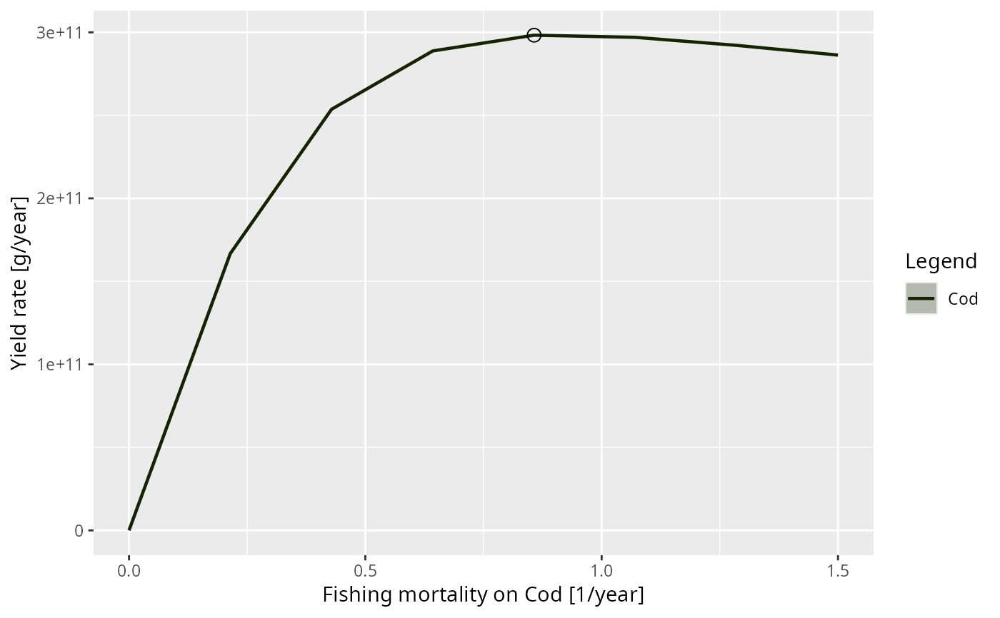

Plot the yield of a species against the fishing mortality on it
Source:R/plotYieldVsF.R
plotYieldVsF.Rd![[Experimental]](figures/lifecycle-experimental.svg)
Varies the fishing mortality on one species over a range of values, leaving the fishing on every other species unchanged, and plots the long-term yield of that species against it. The fishing mortality at which the yield is largest is \(F_{MSY}\), and is marked on the plot by default.
This is scanModel() with scanFishingMortality() as its setter and
getYield() as the quantity it measures. Use scanModel() directly to vary
something other than the fishing mortality on a single species, to measure
something other than the yield, or to follow more than one species at once.
At each fishing mortality the model is projected until it settles, and what
is plotted depends on what it settled on. At a fixed point the yield is read
straight off the settled state. On a limit cycle it is averaged over exactly
one period, and the band around the line shows the range the yield covers
over that cycle, so an oscillation is displayed rather than silently averaged
away. Fishing mortalities at which the model settled on neither are marked
with a cross and should not be relied on; raise t_max for those.
The scan starts from the fishing mortality the model currently sits at and works outwards in both directions, each arm warm-starting from the attractor reached at the previous value.
Usage
plotYieldVsF(
params,
species,
F_range,
F_min = 0,
F_max = 1.5,
no_steps = 16,
gear = NULL,
style = "ribbon",
mark_max = TRUE,
reference_lines = TRUE,
log_y = FALSE,
log = NULL,
return_data = FALSE,
progress_bar = interactive(),
...
)Arguments
- params
A MizerParams object.
- species
The name of the species whose fishing mortality is varied. Only one species at a time.
- F_range
A numeric vector of fishing mortalities for the x-axis. If missing it is built as
seq(F_min, F_max, length.out = no_steps).- F_min, F_max, no_steps
Used to build
F_rangewhen that is missing.- gear
The name of the gear whose fishing mortality on the species is varied. Only needed when several gears catch the species; if NULL (default), the fishing mortality from all of them is replaced. See
scanFishingMortality().- style
How the range covered on a limit cycle is drawn, see
plot.MizerScan(). The default"ribbon"draws the average as a line inside the band.- mark_max
Whether to mark the fishing mortality at which the yield is largest, which is \(F_{MSY}\). Default TRUE.
- reference_lines
Whether to draw reference lines (the current fishing mortality as "Current F", and the
F_MSYspecies parameter if the species has one) as vertical lines. Seeplot.MizerScan().- log_y, log
Whether to use a logarithmic y-axis, see
parsePlotLog(). Unlike most mizer plots this defaults to FALSE, because the yield is exactly zero at zero fishing mortality and a logarithmic axis would drop the point that anchors the curve.- return_data
If TRUE the MizerScan object underlying the plot is returned instead of the plot. Default FALSE.
- progress_bar
If TRUE a text progress bar is shown while the fishing mortalities are swept. Defaults to
interactive().- ...
Further arguments are passed on to
scanModel().
Value
A ggplot2 object, or, if return_data = TRUE, the MizerScan object
holding the data. The fishing mortality giving the largest yield is
available from that object as attr(scan, "at_max").
See also
scanModel(), scanFishingMortality(), plot.MizerScan(),
getYield()
Other plotting functions:
addPlot(),
animate(),
plot,
plot2(),
plotBiomass(),
plotCDF(),
plotCDF2(),
plotDiet(),
plotFMort(),
plotFeedingLevel(),
plotGrowthCurves(),
plotMizerParams,
plotMizerSim,
plotPredMort(),
plotRelative(),
plotSpectra(),
plotSpectra2(),
plotSpectraRelative(),
plotYield(),
plotYieldGear(),
plotting_functions
Other scan functions:
MizerScan(),
plot.MizerScan(),
scanEffort(),
scanModel()
Examples
# \donttest{
plotYieldVsF(NS_params, "Cod", F_max = 1.5, no_steps = 8)
#> ℹ No `a` column so using a = 0.01 in w = a l^b, with w in g and l in cm.
#> ℹ No `b` column so using the isometric default b = 3 in w = a l^b.

# The fishing mortality that maximises the yield
scan <- plotYieldVsF(NS_params, "Cod", F_max = 1.5, no_steps = 8,
return_data = TRUE)
#> ℹ No `a` column so using a = 0.01 in w = a l^b, with w in g and l in cm.
#> ℹ No `b` column so using the isometric default b = 3 in w = a l^b.
attr(scan, "at_max")
#> Cod
#> 0.8571429
# }